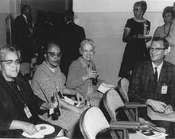

Pour Dorothy Vaughan on ne peut pas vraiment parler d’œuvre, mais plutôt d’un exploit, l’exploit d’avoir fait tout cela en étant une femme noire. De plus il ne faut pas oublier qu’elle ne provient pas d’une famille fortunée, c'était pour ses parents qu’elle a arrêté ses études pour faire professeure. En effet, elle était la seule directrice noire de la NACA, en tant que noire et l’une des seules en tant que femme. Elle a permis de faire changer d’avis ses collègues sur les femmes qui de plus sont noires. Un livre intitulé Hidden Figures de Margot Lee Shetterly adapté en film s'est inspiré de son histoire à elle et ses collègues.
Elle a su s’imposer là où elle n’était pas attendue. Elle a participé au programme « SCOUT » qui fut une grande réussite grâce à des personnes comme elle. Cette femme est aussi devenue experte dans le langage Fortrant qui est un langage informatique pour cela elle avait dû dérober des livres à la bibliothèque pour pouvoir étudier, car elle ne pouvait pas les emprunter en étant noire. Elle s’est même mise à l’apprendre à ses collègues.